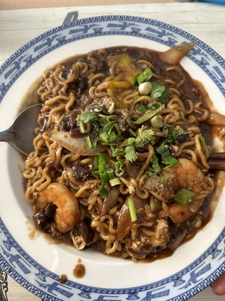
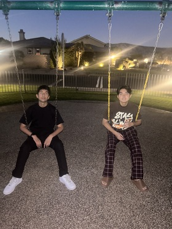

Long Ngo
My name is Hoang Ngo L, and I was born in Vietnam, an S-shape country with diverse cultures and traditions, and hospitality was a word used to describe Vietnamese. The way I write my name was written in American; however, my real name my parents named me was Ngô Hoàng Long. My new life started when I first moved to the United States. It was very hard at first because everything was new to me, and the language barrier was the most difficult. A thirteen year old boy who hangs out with his best friends all day, messing around with people, but when he comes home, he always acts and behaves like a good boy. I used to be a very energetic boy, but starting a new life in the United States was changing me. It changed me into a shy boy who always ate at the corner of the lunch table and was uneasy about having a conversation with anyone. But Xavier had accepted me as a high school student, and they showed me the light again to get me out of my shadow.
As of now, I am currently in my first year of the University of California, Riverside, and majoring in Financial Management. I am a hard worker, scheduling and managing my time always to fit my class’s schedule. With that time management skill that I have, I always finish my homework on time and have enough free time to hang out with my friends. The reason that I am majoring in Financial Management is that I loved money when I was a kid. Money motivates me to focus on school, and I think when my finances are stable, I will live a happy life with someone I love and consider my own family. My first part-time job was in Senior year of high school as an employee at Journeys, a shoe store at a big mall. Even though it was just a holiday job, I have experienced a lot and learned how to welcome customers, discipline time management, communicate with them, and take care of shoes. I quitted the job because my parents wanted me to fully concentrate on school and sports. Back in high school, I was athletic with a love toward volleyball and all my honorable teammates. I learned how to be patient, the knowledge of sportsmanship, teamworks, and respect each other when we played.
With all the knowledge that I learned from the past and I experienced through it, I will use it for the future as a Financial Management. I will use my time management skills to schedule out my work hours, family time, friends time, and time for myself. My communication skills will help me negotiate and present my project to everyone. There is one thing that I will need to do before I graduate and get a job. It is to get an internship. The reason I want to get an internship is because it will give me work experience from a person that already knows about the job, and learn from him. With all the skills that I have learned I hope my future career will turn out to be successful with many opportunities.
Experience
Chief Assistance
• Prepare the food and ingredient.
• Clean everything with fresh water.
• Help the main chief cook.
• Wash the dishes.
Education
University of California, Riverside
Portfolio


.png)
.png)